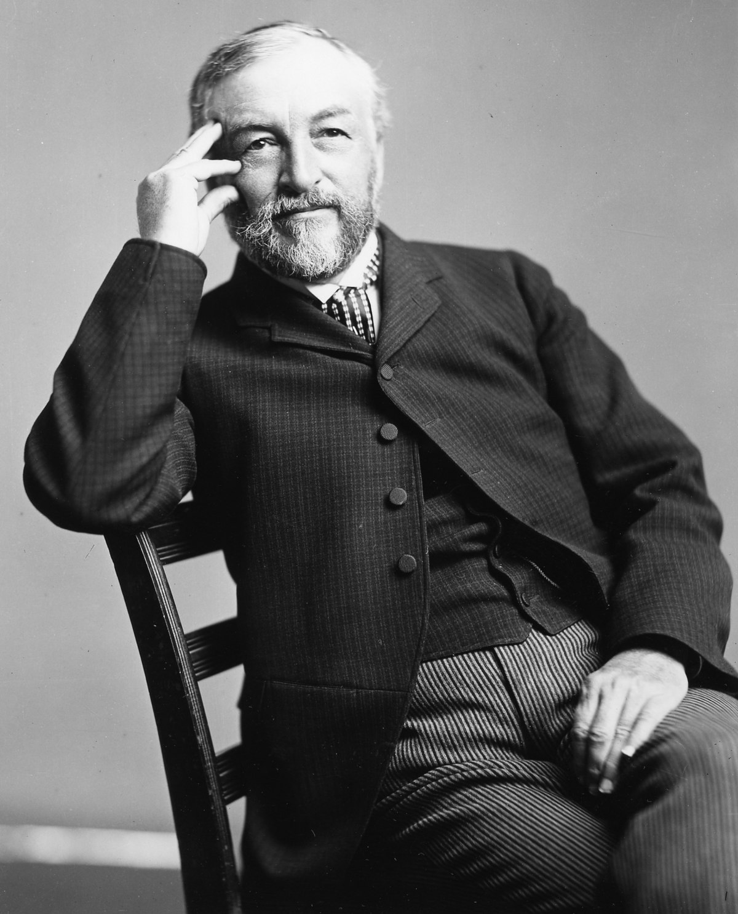
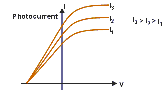

Lectures 1-3 - use Bransden - Joachain for reference
Author
email
Dr Rosaria Lena
rosaria.lena@glasgow.ac.uk
Published
January 6, 2025
Learning objectives
Understanding the key historical context that led to quantum mechanics
Identifying key problems in classical physics, such as the ultraviolet catastrophe, and understanding how quantum concepts provided solutions.
Explaining and summarising the significance of foundation experiments like black-body radiation, Compton scattering and the photoelectric effect, in the development of quantum mechanics.
Understanding the concept of wave-particle duality and its experimental confirmations
Tracing the evolution of atomic models from Rutherford to Bohr
Recognising the foundational role of early quantum mechanics in modern physics.
The following timeline is a bit more detailed… still very brief. Pay attention however to the timescale at which these discoveries happened!
1.1.2 Two equivalent formulations of quantum mechanics
Quantum mechanics was proposed at nearly the same time (see timeline above) using two different but equivalent formulations:
Wave mechanics: proposed by Schrödinger in 1925, following the de Broglie idea about matter waves (we’ll see this towards the end of this chapter). We will start with this description, that you are more familiar with, for the first part of the course.
Matrix mechanics: developed by Heisenberg, Born and Jordan in 1925-1926, which uses non-commutative algebra and associates to each physical quantity and physical “observables” a matrix. This can be more convenient to describe two-level systems, the quantum harmonic oscillator or the angular momentum. We will start using this once we introduce the quantum harmonic oscillator.
These two approaches were then unified in a general formulation of quantum mechanics, developed by Dirac and Von Neumann in 1930-1932.
What led to the necessity of a quantum mechanics framework? Where and how did classical physics fail?
In the following we will discuss the historical motivations that led to the development of quantum mechanics.
1.2 Blackbody radiation and the ultraviolet catastrophe
A body that totally absorbs all radiation that falls upon it is called a blackbody. You can think of it as a perfect absorber of radiation.
A blackbody is in thermal equilibrium, so it has a temperature \(T\).
Since a blackbody absorbs energy and it is in thermal equilibrium, then it must also be a perfect emitter (i.e. emit across all wavelengths): a blackbody is a perfect absorber but it is also a perfect emitter.
Emitted radiation depends only upon the radiator’s temperature, and the total emissive power, or total emittance, or spectral radiance, of a black hole follows the Stefan-Boltzman law:
\[
R(T) = \sigma T^4,
\tag{1.1}\]
where we defined the Stefan’s constant \[\sigma = 5.61\times 10^{-8} \mathrm{W m}^{-2}\mathrm{K}^{-4}.\]
A typical classic model for a perfect blackbody is a black cavity with a small hole (see Figure 1.2): all the light entering is reflected multiple times across the black walls and is (almost completely) absorbed. Since the cavity is in thermal equilibrium, the emitted radiation depends only on its temperature, so the cavity emits like a black body.
Figure 1.2: A perfect blackbody radiator.
Equation 1.1 describes the total emittance, i.e. the emission power per unit area at all wavelengths, but what is the distribution of radiation across wavelengths (or frequencies) that a black body emits? In mathematical terms, we previously found a form for \(R(T)\), but want to know the emittance at a given wavelength\(R(\lambda,T)\), and the total emittance is obviously obtained by integrating this over all the wavelengths: \[R(T)=\int_0^{\infty} R(\lambda,T)d\lambda.
\tag{1.2}\]
Note
The emission spectra of black bodies (the energy emitted against the wavelength or frequency) depend only on their temperature \(T\).
In the following we will also refer to the wavelength (or frequency) monochromatic energy density\(u(\lambda,T)\) (or \(u(\nu,T)\)). The relation between the spectral emittance and the energy density can be shown (Richtmyer, Kennard, and Cooper 1969) to be \[
u(\lambda,T)=\frac{4}{c}R(\lambda,T),
\tag{1.3}\] so from the measurement of the emission spectrum one could determine the energy density.
So what is the form of the emission spectrum of a black body? Although the spectrum of black-body radiation was known observationally (how?!), its theoretical description has puzzled physicists at the end of the 19th Century and many attempts to describe this ran into trouble. It cannot be fully explained using classical physics, it requires quantum physics, as we will see in the following.
The black-body spectrum… observed? In the 1890s?!
You might be wondering how back in the days (1890-ish) physicists already knew the shape of the EM power spectrum… if you are, that’s a good question and you’re not alone. For this, let’s thank Samuel Langley and his bolometer.
Ohhhh…
Langley invented the bolometer,
A very fine sort of thermometer.
It can measure the heat,
Of a polar bear’s feet
At the distance of half a kilometer.
[via J.M. Pasachoff, Contemporary Astronomy (Saunders College Publishers, Philadelphia, 1985)]

Figure 1.3: Samuel Langley, inventor of the bolometer.
Figure 1.4: Scheme and illustration of the bolometer.
The rest of Langley’s work/life story is also worth checking out, ranging from effectively inventing standard time to pioneering powered flight!
1.2.1 Wien’s law (1893)
From general thermodynamical arguments, in 1893 Wien showed that the black-body energy density had to take the form \[
u_{\lambda}(\lambda,T)=\frac{dE}{d\lambda}=\lambda^{-5}f(\lambda T),
\tag{1.4}\] or in terms of the frequency: \[
u_{\nu}(\nu,T)=\frac{dE}{d\nu}=\nu^3 g(\nu/T),
\tag{1.5}\] where \(f(\lambda T)\) and \(g(\nu/T)\) are universal functions that depend solely upon \(\lambda T\) and \(\nu/T\) respectively and cannot be derived thermodynamically, so they have to be found empirically.
Wien’s empirical guess was that \(f(\lambda T)\) in Equation 1.5 had the form \[
f(\lambda T) = C \exp \left(-\frac{A}{\lambda T}\right).
\]
Equation 1.5 is called Wien’s law, also referred to as Wien’s approximation or Wien’s model (not to be confused with ‘Wien’s displacement law’!), and it is a good model for the observed spectrum at short wavelength (high frequencies) \(hc\gg k_BT\lambda\), but it is not accurate at high wavelengths.
In Equation 1.3 we showed the relation between the spectral emittance and the energy density, from which Wien derived the explicit form of Wien’s approximation for the spectral emittance (after attempting to derive the function \(f(\lambda T)\)). This is shown in Equation 1.6 and an example is plotted in Figure 1.5.
Note that Wien’s law did not initially contain fundamental constants, which were later introduced by Max Planck.
Figure 1.5: Spectral radiance plotted using the Wien’s approximation (Equation 1.6), for T=4000K and T=3000K.
Problems with the Wien’s approximation:
This model works well at small wavelengths but it is not very good at high wavelengths - low frequencies.
Thermodynamical reasoning is not sufficient to derive an accurate model.
1.2.2 Wien’s displacement law
From Figure 1.5 we see that this model shows peak of the spectral emission at different wavelengths that depend on the temperature of the black body. The relationship between these two quantities is given by the Wien’s displacement law (Equation 1.7).
Wien’s displacement law
\[
\lambda_{max} = \frac{b}{T}
\tag{1.7}\]
\(\lambda_{max}\) - value of the wavelength corresponding to the peak \(b\approx 2.8978 \times 10^{-3} \mathrm{m}\cdot\mathrm{K}\) - Wien’s displacement constant \(T\) - absolute temperature.
Wien’s displacement law derivation
Demonstrate qualitatively the Wien’s displacement law relation between the maximum wavelength and the temperature, showing that this can be obtained from Wien’s model of the energy density (Equation 1.5 or Equation 1.4).
Hint
It may be useful to do a change of variables.
Solution - Wien’s displacement law derivation
Starting from the energy density in Equation 1.5, the peak can be found by imposing \(\frac{\mathrm{d} u}{\mathrm{d} \nu}=0\) (the procedure is equivalent if we consider Equation 1.4 and we derive it with respect to the wavelength instead).
Note that we obtained \[
3 g(x)+x\frac{\mathrm{d}g(x)}{\mathrm{d}x}=0,
\]
which depends only on \(x\) and not \(\nu\) or \(T\) individually. This simplifies things, as it means that the peak itself is going to be a function of this ratio \(\nu/T\) only (we do not need to solve it explicitly, so do not need to know the form of \(g(x)\).)
We cannot determine the constant \(b\) of Equation 1.7, but we can derive the relation between the wavelength at the peak and the temperature of the black body.
1.2.3 Rayleigh-Jeans model (1900)
Lord Rayleigh used classical physics to predict the shape of the black body spectrum, which was later refined by Sir James Jeans. The explanation is based on electromagnetic theory and standing waves (more details about the derivation are given in the subsection below).
The Rayleigh-Jeans law in Equation 1.8 is a good approximation to the observed spectrum at long wavelength (low frequencies) \(hc\ll k_BT\lambda\), giving the following spectral radiance, plotted in Figure 1.6.
import warningswarnings.filterwarnings('ignore')import numpy as npfrom astropy.constants import k_B, c, hfrom matplotlib import pyplot as pltfrom matplotlib import rcrc('text',usetex=True)rc('font',size=15)rc('figure',figsize=(8,6), dpi=300)l = np.linspace(0,3000,1000) # Wavelength, nmT =4000# Temperature, KelvinT2 =3000# Temperature, KelvinB_rj=c.value*2*k_B.value * T /(l*1e-9)**4;# 1e-9 to convert from nm to metersB_rj2=c.value*2*k_B.value * T2 /(l*1e-9)**4;# 1e-9 to convert from nm to metersplt.plot(l, B_rj, label="Rayleigh-Jeans law, T=4000K")plt.plot(l, B_rj2, label="Rayleigh-Jeans law, T=3000K")plt.xlabel(r'Wavelength $\lambda$ (nm)')plt.ylabel(r'Spectral Radiance $R(\lambda, T)$ (Wm$^{-3}$sr$^{-1}$)')plt.title('Spectral radiance')plt.ylim([0,5e14])plt.grid()plt.legend();
Figure 1.6: Spectral radiance plotted using the Rayleigh-Jeans law (Equation 1.8), for T=4000K and T=3000K.
The Rayleigh-Jeans law has a big problem: the radiance keeps increasing indefinitely at short wavelengths (higher frequencies) - see Figure 1.6. If it were true, the power emitted at short wavelengths would be infinite! This is known as the ultraviolet catastrophe, and indicates the failure of classical physics to explain the behaviour of thermal radiation.
Imagine to have a 3D cubic cavity with side-length \(L\). Inside the cavity we would expect to have standing waves (as in Figure 1.7), and the amount of radiation that the cavity can emit at a certain frequency is proportional to the number of modes it allows in that range. We are interested in the following three questions:
How many modes are there, per unit frequency, per unit volume, in the cavity?
How much energy is needed to excite each mode, and how is the energy density distributed?
1. Determining the number of modes in the cavity
To answer question 1, we proceed per steps:
Consider the cavity and impose periodic boundary conditions (we must have zero amplitude at the walls): then the allowed modes have the form \(\prod_i \sin(k_i x_i)\), with \(k_i = n_i\pi L\), for integer \(n_i\). Extending to each direction: \[
|\mathbf{n}|^2 = n_x^2 + n_y^2 + n_z^2 = (2\nu L/c)^2 = (2 L/\lambda)^2.
\tag{1.9}\]
How do we find the total number of modes that satisfy this condition? We would need to count all the combinations of the integer values \(n_i\), but we can use a trick, which consists in assuming that the number of combinations is the volume of something that we call and “n-space”: a 3D grid containing the values of \(n_i\) in each direction (Figure 1.8).
We consider the n-space as a sphere: to find the number of modes we need to find its volume (this is a good approximation since the cavity length is much larger than the wavelength), but we need to consider only the positive quadrant (1/8 of the volume of the sphere), and we can have waves polarized along two planes (multiply the volume by 2 to account for two polarizations). With all this in mind, the volume of the n-space (positive) sphere with two possible polarizations is:
From this, using Equation 1.9, we find that the number of modes per volume (in terms of the wavelength or the frequency) is \[
\mathrm{d}N(\lambda) = \frac{8\pi L^3}{3\lambda^3}\mathrm{d}\lambda, \quad \mathrm{d}N(\nu)= \frac{8\pi \nu^3 L^3}{3c^3}\mathrm{d}\nu
\tag{1.10}\]
We now want to find the number of modes per volume, per unit frequency (or wavelength), so we divide by \(L^3\) and differentiate with respect to \(\nu\) (or \(\lambda\)), obtaining respectively: \[
\left|\frac{\mathrm{d}N(\nu)}{d\nu}\frac{1}{L^3}\right|=\frac{8\pi \nu^2}{c^3}
\tag{1.11}\]\[
\left|\frac{\mathrm{d}N(\lambda)}{d\lambda}\frac{1}{L^3}\right|=\frac{8\pi}{\lambda^4}.
\tag{1.12}\]
Note that \(\frac{\mathrm{d}N}{d\nu}\) gives a negative result because the number of modes decreases with increasing wavelength.
These results hold general validity in both classical and quantum physics, but we did not address the second and third questions yet to determine the probability of occupying the modes and their corresponding energy. This is where classical and quantum physics start diverging, and this is where this difference becomes important. The Rayleigh-Jeans model uses a classical physics approach in addressing the above questions.
Determining the energy associated to the modes
To find the energy associated to the modes we need to first ask: what is the probability that the modes are occupied? Based on classical physics all the modes have the same probability of being occupied, i.e. all modes have the same chance of being produced and their number increases according to Equation 1.11 and Equation 1.12.
According to classical (statistical thermal) physics, the principle of equipartition of energy states that, for a body in theraml equilibrium at temperature \(T\), the energy associated to each degree of freedom is \(1/2 k_B T\). So the energy needed to excite each mode (accounting for two polarizations) is \(\bar{E}=\frac{1}{2}\times 2 k_B T = k_B T\), and this does not depend on the frequency.
What’s the result for the energy density, if we put these things together? \[
u(\nu,T)=\frac{8\pi\nu^2}{c^3} k_B T.
\tag{1.13}\]
Note
Note that this means that the function \(g(x)\) introduced in Equation 1.5 is then \(g(\nu/T)=\frac{k_B T}{\nu}=\frac{1}{x}\).
If we integrate Equation 1.13 over all the frequencies to find the total energy, \[
E_{tot} = \int_0^{\infty} u(\nu,T) d\nu = \infty
\]
we obtain infinite energy (not physically possible) - this is the ultraviolet catastrophe.
1.2.5 Planck’s Law (1900)
We saw that Wien’s approximation was good at low wavelengths (high frequencies), while the Rayleigh-Jeans law works better in the opposite regime of high wavelengths (low frequencies).
In 1900 Planck was able to derive a spectrum that fits the observed data of the blackbody spectral emission by assuming that energy comes in discrete quanta of energy \[
E = h\nu = hc/\lambda,
\tag{1.14}\]
with \(h=6.626\times 10^{−34} \mathrm{J}\cdot\mathrm{Hz}^{−1} = 4.136\times 10^{−15} \mathrm{eV}\cdot \mathrm{Hz}^{−1}\) being Planck constant.
This marked the birth of quantum physics! And believe it or not, Planck’s idea started from a lightbulb (see video below).
The Planck radiation spectrum for a black body’s spectral radiance is:
The Wien’s approximation, the Rayleigh-Jeans law and Planck’s law are compared as a function of wavelength in Figure 1.9 and as a function of frequency in Figure 1.10.
Figure 1.9: Comparison of the spectral radiance plotted using the Rayleigh-Jeans law (Equation 1.8), Wien’s approximation (Equation 1.6) and Planck’s law (Equation 1.15) for T=4000K.
Figure 1.10: Comparison of the spectral radiance plotted using the Rayleigh-Jeans law (Equation 1.8), Wien’s approximation (Equation 1.6) and Planck’s law (Equation 1.15), as a function of frequency, for T=5800K.
Interlude: Max Planck (1858-1947)
Personal life:
Music prodigy on piano, organ and cello, but chose physics. Later played regularly with Einstein in Berlin.
Advised against physics: “Almost everything already discovered, and all that remains is to fill a few holes” – Planck “did not wish to discover new things” (!)
Academic career in Germany, ended up as theoretical physics prof in Berlin, specialising in thermodynamics & entropy
Planck was patriotic and remained in Germany during the Nazi era, despite opposing some government policies, especially the persecution of Jews.
His home was destroyed by bombing near the end of World War II, leading to significant hardship
He was married twice, first to Marie Merck, and after her death, to her cousin, Marga von Hösslin.
He faced personal tragedy, losing three of his children, including one son, Erwin, who was executed by the Gestapo for unsuccessfully attempting to assassinate Hitler in 1944.
Physics considerations and contributions:
Grand figure of German physics, Nobel Prize, father of DPG and Solvay conferences. He resisted Nazi takeover of DPG and helped Jewish physicists. Died shortly after his son Erwin was executed.
Rayleigh and Jeans kept setting \(h\rightarrow 0\): “I amunable to understand Jeans’ stubbornness – he is an example of a theoretician as should never be existing. So much the worse for the facts if they don’t fit.”
1.2.5.1 Derivation of the Planck’s model
What are the ‘classical’ assumptions of the Rayleigh-Jeans model that were dropped by Planck?
In the previous section on the derivation of the Rayleigh-Jeans law we determined the number of modes and the energy associated to those. The number of modes counting was correct, but the mistake is in assuming that the equipartition of energy leads to each mode having an energy of \(k_B T\), and that exciting each of these modes is equally probable.
According to the classical theory, the average energy per mode can be obtained starting from the Maxwell-Boltzmann distribution\[
p(E)=e^{-E/k_B T},
\tag{1.16}\] and using the classical equipartition of energy: \[
\langle E\rangle=\frac{\int E p(E) \mathrm{d}E}{\int p(E) \mathrm{d}E} = \frac{k_B^2 T^2}{k_B T} = k_B T
\tag{1.17}\]
This result is the one we previously determined in Section 1.2.4, however the integration relies in a continuum distribution of energies.
Planck however used the discretisation of the energy levels to derive (in 2 months!) the correct form of the spectral radiance.
Using discretisation of the energy \(E\) into discrete energy steps \(\epsilon=h\nu\), from Equation 1.17 we obtain \[
\langle E\rangle=\frac{\sum_{n=0}^{\infty}n\epsilon e^{-n\epsilon/k_B T}}{\sum_{n=0}^{\infty} e^{-n\epsilon/k_B T}} = \frac{\epsilon}{e^{\epsilon/k_B T}-1}.
\tag{1.18}\]
You can use the result of the geometric series \(\sum_{n=0}^{\infty}x^n=\frac{1}{1-x}\) and its consequence \(\sum_{n=0}^{\infty}(n+1)x^n=\frac{1}{(1-x)^2}\).
1.2.6.1 Consequences of Planck’s model and comparison to the Rayleigh-Jeans model
Planck’s introduction of discrete quanta of energy therefore affected the probability of occupation of the modes and their energy, as follows:
In classical physics the occupation of each mode was equally possible, but since modes are quantised and each quanta has energy \(E=h\nu\), exciting higher modes is less probable because it requires more energy. The probability that a mode will be occupied is given by the Bose-Einstein distribution function: \[
p_{\nu}=\frac{1}{e^{h\nu/k_B T}-1}
\tag{1.19}\]
Note that this distribution was introduced only in 1924; Planck’s law can be re-derived using this from quantum statistics arguments.
The classical theory stated that each mode needed equal energy of \(k_B T\) to be excited, in accordance with the equipartition of energy. However, the average energy per “mode” (or “quantum”) is given by its energy (\(h\nu\)) times the probability that this will be occupied (the Bose-Einstein distribution function of Equation 1.19): \[
\langle E\rangle=\frac{h\nu}{e^{h\nu/k_B T}-1},
\tag{1.20}\] which is now dependent on the frequency.
The energy density is then given by the number of modes, per unit volume, per unit frequency (Equation 1.11), times the average energy per mode of Equation 1.20:
Planck spectral distribution law
\[
u(\nu,T)=\frac{8\pi\nu^2}{c^3}k_B T \left(\frac{h\nu/k_B T}{e^{h\nu/k_B T}-1}\right) = \frac{8\pi h}{c^3}k_B T \left(\frac{\nu^3}{e^{h\nu/k_B T}-1}\right).
\tag{1.21}\]
1.2.6.2 Understanding the Planck’s distribution
Figure 1.11: Planck’s distribution, with explicit discretisation (grey steps). The energy step is \(\Delta\epsilon=h\nu\).
Compare Equation 1.21 with Equation 1.13: you can see that the term related to equipartition energy has now a modification factor which reduces to the mode-counting form at low \(\nu\) and returns Wien’s approximation at high \(\nu\) (demonstrate it in the problems below).
Note that the \(n=0\) mode does not contribute to the value of \(\langle E\rangle\) in Equation 1.18, while in the smooth equipartition integrap in is a dominant term: this is why the growth of energy density at high frequencies is suppressed!
The first non-zero contribution starts at \(E=\epsilon=h\nu\), which incrases with frequency.
For small \(h\nu/k_BT\) (upper plot of Figure 1.11), the discrete steps are small enough that the distribution is pseudo-continuous: recover classical Rayleigh–Jeans form (show it in the problems below).
At large \(h\nu/k_BT\), the first non-zero mode is highly Boltzmann-suppressed: finite energy in the cavity \(\rightarrow\)solves the ultraviolet catastrophe!
But… is the energy fundamentally quantized, or just emitted that way?
1.2.7Exercise
Show that for low frequencies (\(hc \ll \lambda k_B T\)) the Rayleigh-Jeans law can be derived from the Planck law.
Show that for high frequencies (\(hc \gg \lambda k_B T\)) Wien’s law can be derived from the Planck law.
Show that Stefan’s law can be found by integrating Equation 1.15
Find Wien’s displacement law (and the Wien’s displacement constant) using the Planck law.
Hint
You can use the approximation \(\lim_{x\rightarrow 0} \exp(x) = 1 + x\)
1.2.8 Blackbody radiation and the cosmic microwave background
The cosmic microwave background (CMB) is the aftermath of the Big Bang cosmological model, discovered by accident in 1964 by Penzias and Wilson. Using a radio telescope, they detected an isotropic radio ‘noise’ incident on Earth from all directions with the same intensity and filling the universe uniformly. The intensity was then measured at other wavelengths and the spectral distribution was observed to be consistent with a near-perfect \(2.7\) K with \(\sigma(T) \sim 20 \mu K\) and a peak of emission in the microwave region (see Figure 1.12).
Figure 1.12: Based on their temperatures, different bodies emit at different ranges of frequency. The cosmic microwave background emits in the far infrared/microwave with a Wien’s peak in the microwave.
Research conducted with the Far Infrared Absolute Spectrophotometer (FIRAS) on the COBE satellite measured a temperature of \(2.725 \pm 0.002\) K. Earlier experiments had detected some anisotropy in the background radiation due to the motion of the solar system, but COBE’s data revealed fluctuations in the radiation (Figure 1.13).
Later, the WMAP mission produced a higher-resolution map of these anisotropies in the cosmic background radiation. The Planck satellite has since further refined this mapping, offering the most precise measurements of the key cosmological parameters to date.
Figure 1.13: Cosmic microwave background, showing the fluctuations around the average temperature of 2.74K.
Why do we observe these temperature fluctuations? At the very beginning, during the Big Bang, the Universe experienced an extremely rapid period of inflation that lasted only a tiny fraction of a second—around \(10^{-32}\) s. By the end of this inflationary phase, the Universe had expanded by a staggering factor of about \(10^{30}\) (that’s a lot!).
At the beginning of the inflation and expansion, random quantum fluctuations were present, what happened to those? They were stretched to enormous, cosmological scales during this process! As a result of these quantum fluctuations, the post-inflation universe now consist of vast regions with slightly different properties from one another, with certain areas having a slightly higher density of matter than others. Such fluctuations are therefore necessary in Big Bang cosmology to create the non-uniformities required for galaxy formation. Quantum fluctuations are thought to have seeded large-scale structure in the universe!
Ok, but how are the density fluctuations and the thermal fluctuations related?
Before the cosmic microwave background (CMB) was released, photons and particles were tightly linked, forming a unified ‘fluid’ of matter and radiation. At the time of recombination, around 380,000 years after the Big Bang, the two decoupled, allowing photons to travel freely across the Universe. These photons carried with them a record of how matter and radiation were distributed at that moment. Photons that came from denser regions lost more energy (since they needed to give away more energy to escape from a higher gravitational attraction), making them cooler, while those from less dense regions lost less energy and appeared warmer. As a result, the temperature fluctuations in the CMB reflect the density fluctuations in the early Universe, offering a ‘snapshot’ of its structure at the time of recombination.
Let’s now go back to discussing how quantum mechanics was discovered. The ultraviolet catastrophe was one of the pieces of the puzzle, but not the only thing that could not be explained without introducing the concept of quantisation of energy.
1.3 Photoelectric effect
The photoelectric effect was discovered by Heinrich Rudolf Hertz in 1887 during his work on radio waves. He observed that ultraviolet light affected the voltage at which sparking occurred between metal electrodes. Philipp Lenard clarified this in 1902, showing that light striking a metal surface releases electrically charged particles (later identified as electrons), discovered by J.J. Thomson in 1897. The photoelectric effect was then fully explained by Einstein in 1905, who got the Nobel prize for this (not for the relativistic theory!).
To explain this, let’s introduce the setup: a vacuum chamber containing a metallic plate (it can be of different materials, e.g. sodium) hit by radiation at a certain wavelength and intensity, and a collector on the opposite side. Both sides are connected to a battery that can apply a voltage difference, and the collector is connected to an ammeter that measures the current of the charged particles hitting the collector. Use the following simulation (embedded below in the html file) and note what you observe when varying the following quantities:
Wavelength of incident light
Intensity of the incident light
Voltage of the battery
The material of the metallic plate
It is advisable to change only one parameter per time at first to better determine its effects. Show the relevant graphs on the simulator after varying the corresponding quantities indicated on the axis.
## What should we expect classically? Classically, if we treat light as a wave, we know that its energy depends on the intensity, and therefore on the amplitude of the EM wave. The expectation is therefore that the energy of an electron emitted does not depend on the frequency of the light, but on its intensity. Furthermore, classically there is no reason why electrons should not be emitted if enough energy (intensity) is sent to the metallic plate, this should not depend on the frequency. What do we observe instead?
## What do we observe? Simulated experiment 1: changing the material and the wavelength Let’s start with sodium, setting the voltage to zero and the intensity to 50%, and let’s change the wavelength from higher to lower (from 850nm, in the IR, to the UV), what do we notice?
Nothing happens until the wavelength reaches a certain threshold \(\sim 530\) nm, where then electrons start being emitted by the metallic plate hit by the light
Below the threshold frequency (above the threshold wavelength) we do not see emitted electrons even if we change the intensity
If we change the material, the critical frequency changes
The more we decrease the wavelength (increase the frequency) the faster the electrons move - this means they have more kinetic energy
Simulated experiment 2: changing the intensity and the voltage Let’s now fix a wavelength at which electrons are released and change first the intensity and then the voltage to see how the current is affected.
Let’s start by setting a null voltage. We can see that the current increases with increasing intensity, and in fact we can observe that more electrons are released and all of them reach the collector at higher intensities.
Positive voltage: Let’s now ramp up the voltage to the maximum positive value: we see that now the electrons are moving faster because of the potential, and the system reaches a saturation current
Negative voltage: If the value of the voltage is then decreased until it becomes negative, however, we can see that increasingly higher proportions of electrons start travelling towards the collector but come back, as now the potential is opposed to the initial motion of the electrons. Since the intensity changes the number of electrons emitted and therefore the photocurrent, at a fixed negative voltage the photocurrent will decrease with decreasing intensity. However, regardless of light intensity, we can eventually reduce the photocurrent to 0 with a negative stopping voltage\(V_0\) (see Figure 1.14). The stopping voltage decreases linearly with the light frequency, until it reaches 0: there is no photocurrent below a threshold frequency.
Figure 1.14: Photocurrent vs the potential difference, for two different values of the intensity and the same frequency. The stopping potential here is indicated with \(\Delta V_s\). For positive values of the potential difference, the photocurrent saturates for both intensities, while for negative values the stopping potential is eventually reached, regardless of the intensity.
## Why we need a quantum explanation Classical physics does not explain why no photocurrent is recorded above the threshold wavelength: it should depend on the amplitude and therefore on the intensity, according to classical waves physics.
We need the quantisation of energy, as Einstein proposed, for this.
Electrons are emitted when a work of at least the binding energy\(E_b\) is paid to free them: this value depends on the material of the metallic plate. If we consider that the energy coming from light is quantised and follows Planck’s definition of quanta of energy \(E=h\nu\), then the minimum work \(W\) that needs to be done to emit electrons is related to the kinetic energy of the electrons through the Einstein’s photoelectric equation: \[
E_b = h\nu - W,
\tag{1.22}\] and the minimum (threshold) frequency necessary to eject electrons is \(\nu_{th} = W/h\).
The extra energy results in kinetic energy, which determines a maximum possible velocity (see Figure 1.15)
Figure 1.15: Some observations of the photoelectric effect. Electrons are ejected only below a certain wavelength, and the lower the wavelength, the higher is the kinetic energy (max velocity).
The intensity determines the number of photons present in the light sent to the metallic plate, so higher intensity means that more electron can be extracted, if the frequency is above the threshold, and the photocurrent increases
The voltage can be tuned to increase the photocurrent by facilitating the motion of electrons incresing the voltage. A negative voltage can otherwise invert the motion of the electrons, and consequently reduce the photocurrent all the way to zero (see Figure 1.16).

Figure 1.16: Photocurrent vs the voltage for different values of the intensity. For each intensity, increasing the voltage from 0 leads to an increase of intensity up to a plateau, where all the electrons emitted get to the collector. When the voltage is negative, the more it gets smaller, the less is the photocurrent.
1.4 The nuclear atom
The description of the structure of the atom has evolved according to the timeline in Figure 1.17.
Figure 1.17: History of the structure of the atom.
Where did quantum mechanics come into play in the structure of the atom?
1.4.1 The ‘classical’ problems with Rutherford’s model
Geiger, Marsden, and Rutherford experiments on \(\alpha\)-particle scattering (1908–1913) revealed that most atomic mass and all positive charge is concentrated in a central nucleus. This marks the end of the “plum pudding” model… but there is a problem. According to classical physics, electrons in orbits (accelerating charges) should emit radiation and therefore lose energy and spiral in to the nucleus. What does prevent this from happening? Classical physics could not provide a valid reason.
1.4.2 The Bohr model
Bohr (1913) solved this problem with a theory based mainly on classical mechanics, but with some new quantum ideas. Bohr’s postulates were:
Electrons move in circular orbits determined by Newton’s and Coulomb’s laws.
These circular orbits are quantised: the electron can’t occupy any region around the nucleus in a continuous way, but only stable orbits, hence it can’t spiral into the center. Since the energy is constant with time, these are called “stationary states” (we’ll get back to this concept later).
To go from one orbit to another, the electron must emit or absorb quanta of energy: this explained the discrete absorption and emission spectral lines!
For example, a spectral line at frequency \(f\) is emitted when the atom transitions from the orbit at energy \(E_i\) to the orbit at energy \(E_f>E_i\): $ hf = E_i - E_f$
The atomic angular momentum is quantized and the only orbits allowed are the ones for which the angular momentum is a multiple of \(\hbar=\frac{h}{2\pi}\) (reduced Planck constant), i.e. \(L = mvr = n\hbar\). This idea came from the fact that the Planck constant \(h\) has dimension of angular momentum.
Starting from that, Bohr predicted what the angular momentum and allowed orbits should have been for outer electrons in atoms with large mass number, and observed consistency with classical electrodynamics predictions.
1.4.3 Bohr’s correspondence principle
Why did the quantum and classical results agree in atoms with large mass number? And why is angular momentum quantized?
Because in large systems classical physics is a good approximation of quantum physics! This is the correspondence principle, and we will encounter it again later in the course.
Bohr’s correspondence principle
Predictions of quantum theory must correspond to the predictions of classical physics in the region of sizes where classical theory is “known to hold”.
Quantum systems are usually described by quantum numbers \(n\), and the classical limit should be recovered from the quantum results, for \(n\to \infty\), i.e.
Figure 1.18: Quantized electron orbitals. To move from one orbital to one at a lower energy, the electron must emit a photon of energy equal to the energy gap between the two orbitals. To move to a higher energy orbital, it must absorb a photon with the energy difference between the two orbitals.
Figure 1.19: First three series of spectral lines of the Hydrogen atom.
Historical remark: Arthur Erich Haas
In reality, the first quantum atomic model with quantised orbitals was proposed by Arthur Erich Haas in 1910(Haas 1910) (3 years before Bohr). Haas presented his work at a lecture in Austria held during carnival time, and his idea was at that time rejected and ridiculed. As Haas recalled: “When I lectured to the Chemical-Physical Society of Vienna … Lecher … referred to the presentation during open discussion as”a carnival joke”. Haas was in fact the first one to estimate the Bohr radius and to create a connection between atomic orbitals and Planck constant! It is unclear what changed a shift in the opinion and led to the acceptance of Bohr’s theory only three years later, but probably the times were not mature enough to accept quantum concepts more widely when Haas proposed his idea.
1.4.4 Compton’s scattering
We saw that the Bohr’s model explained the emission and absorption spectral lines. What happens if electrons interact with light at high frequencies such as X-ray? In this case it is reasonable to consider the electrons free, since the binding energy of the atom is very small compared to the X-ray energy, so the interaction between the high-frequency radiation and the electron would result in scattering.
Classical expectation: when the EM wave is scattered off atoms, the wavelength of scattered radiation should be the same as the wavelength of the incident radiation. X-rays had been discovered in 1895 by W. K. Rontgen and were thought to be electromagnetic radiation of high frequency. Based on Thomson’s theory (Thomson’s scattering), the oscillating electric field of the incident radiation would make the electrons of the target atoms vibrate with the same frequency, and these would radiate electromagnetic waves at the same frequency.
This is not what Compton observed though. In 1922 Compton studied inelastic scattering of X-rays from graphite, and found that, with increasing scattering angle, a second peak was appearing at longer wavelength compared to the one of the incident light (Figure 1.20). This change in wavelength between the peaks of the incoming beam and the scattered one is the Compton shift and was found to be \[
\Delta \lambda = \lambda_f - \lambda_i = \frac{h}{m_e c}(1-\cos(\theta)),
\tag{1.23}\] where \(m_e\) is the mass of the electron and \(\theta\) is the scattering angle.
The constant in Equation 1.23, \(\dfrac{h}{m_e c}=2.4\times 10^{-12}\) m is the Compton wavelength of the electron.
Figure 1.20: Compton scattering experiment: the secondary peak at longer wavelength starts appearing with increasing scattering angle.
Derivation of the Compton shift
Compton used both special relativity and the quantisation of light to derive a formula for the Compton shift. The derivation itself is quite straightforward as it only requires the application of conservation of energy and conservation of momentum for the collision of a photon with a stationary electron. The only difference with a pure classical physics approach is that we need to use the relativistic energy expression and the Planck formula.
Compton scattering: a high energy photon collides with an electron at rest. The electron gains energy, so the scattered photon has a lower frequency.
From conservation of energy: \[
h\nu_i + m_ec^2 = h\nu_f + \sqrt{p_e^2c^2+m_e^2c^2}
\]
Squaring this and rearranging the terms: \[
(p_e c)^2 = (h\nu_i)^2 + (h\nu_f)^2 - 2h^2 \nu_i \nu_f +2 m_e c^2 (h\nu_i -h \nu_f)
\tag{1.24}\]
From conservation of momentum: \[
\vec{p}_i=\vec{p}_e+\vec{p}_f
\] Rearranging this and using the definition of the scalar product: \[
p_e^2 = (\vec{p}_i-\vec{p}_f)^2 = p_i^2 + p_f^2 -2 p_i p_f \cos(\theta).
\]
We can now multiply each side by \(c^2\) and use the relativistic and Planck’s energies (\(pc=h\nu\)):
Equating Equation 1.24 and Equation 1.25 and rearranging, we obtain \[
\frac{1}{h\nu_f}-\frac{1}{h\nu_i}=\frac{1}{m_e c^2}(1-\cos\theta),
\] which using \(\nu=c\lambda\) gives the Compton shift of Equation 1.23: \[
\Delta \lambda = \lambda_f - \lambda_i = \frac{h}{m_e c}(1-\cos(\theta)).
\]
1.4.5 The problems with Bohr’s model
In the years 1920s it was clear that Bohr theory still presented some unresolved problems:
It failed to predict the observed intensities of spectral lines.
Good for one-electron atoms, but very limiting for multi-electron atoms.
It failed to provide an equation of motion governing the time development of atomic systems starting from some initial state.
It overemphasized the particle nature of matter and could not really explain the origin of stationary states in the orbits or wave-particle duality.
It did not supply a general scheme for “quantizing” other systems, especially those without periodic motion.
1.5 De Broglie’s hypothesis and matter waves
In 1923 Louis de Broglie (Figure 1.21) introduced new ideas that answered some of the above open questions. In analogy with the light wave-particle duality, de Broglie suggested that, microscopically, matter may the same way, having both particle-like and wave-like properties. He suggested that this would for instance be the case for electrons: every electron was “accompained” by a (non electromagnetic!) wave, which “piloted” the electron through space.
Figure 1.21: Louis de Broglie, physicist and aristocrat.
The wave-like and particle-like properties of light can be related by following equation for the momentum \(p\) of the photon, $ p = k = h /c = h/$, where \(k=2\pi/\lambda\) is the wavenumber and \(\nu\) and \(\lambda\) are respectively the frequency and wavelength of the light wave.
In analogy to this, de Broglie introduced the concept of wavelength associated to any object moving with a momentum \(p\) - the de Broglie wavelength.
De Broglie wavelength
\[
\lambda_{dB} = \frac{h}{p}.
\tag{1.26}\]
We can also use the form \(p=\hbar k\), using the de Broglie wavenumber \(k = 2\pi/\lambda_{dB}\).
1.5.1 Interpretation of the Bohr’s circular orbits
The idea of de Broglie gives a qualitative explanation of Bohr’s idea of quantized orbits, as the waves associated to the electrons would interfer, leaving areas of destructive interference where “electrons are forbidden”, while only standing waves would be allowed to “fit” in the Bohr’s circular orbits. These would be given by a discrete set of wavelengths that interfer constructively if an integral number of wavelengths fits exactly into the circumference of the orbit (see Figure 1.22), i.e.
\[
n\lambda = 2\pi r,
\]
where \(r\) is the radius of the circular orbit.
Figure 1.22: Standing waves fit to a circular Bohr orbit if the circumference is an integer multiple of the electron’s de Broglie wavelength.
1.5.2Exercise
Determine the de Broglie wavelength of a 54eV electron.
Hint
What is the kinetic energy of the electron?
Solution
The kinetic energy of the electron is \(\frac{p^2}{2m} = E = 54eV\), therefore \(p=\sqrt{2mE}=1.67\times 10^{-10} m = 1.67\) Å (remember to convert energies to Joules!). This is the typical scale of spacing between atoms in a solid.
Code
import numpy as npfrom scipy.constants import m_e, hE_eV =54#eVE = E_eV*1.60218e-19#J. Converted the energy to Joules herem_e #kgp = np.sqrt(2*m_e*E) lambdadB = h/pprint(f'De Broglie wavelength = {lambdadB:.2e} m')
De Broglie wavelength = 1.67e-10 m
1.5.3 Electron diffraction experiments
Designing and conducting an experiment to confirm de Broglie’s hypothesis was not an easy task, why? The most straightforward thing to show that small entities like electrons can in fact behave like waves would be to try to observe wave-like behaviour through experiments already used in optics, for instance diffraction. But… how small should the distance between slits be in a diffraction experiment, to observe interference with such “electron waves”?
Think about the number that we obtained in the previous exercise for the de Broglie wavelength, which sets the scale at which the electron would exhibit quantum wave-like properties. This is of the order of nm, which is the typical distance between atoms in a molecules. How can we design a diffraction grating with such small distances? Any macroscopic diffraction slit would be too big for this purpose. Well, the only way would be to use the molecules themsevels, using atomic lattices!
In 1925, Davisson & Germer were conducting electron scattering experiments to understand the disposition of atoms on a nickel surface, when they accidentally broke the vacuum in their experimental setup, and to get rid of the oxidation of the nickel surface they heated up the sample. Upon repeating the experiment, different results were found and electron Bragg scattering was accidentally measured! The reason was that the prolonged heating had changed the internal structure of the atoms in the nickel target, forming large single-crystal regions in the polycrystalline sample, which provided an ideal lattice to observe electron diffraction.
From the diffraction equation, \(λ = 2d sin((π − θ)/2)\) for Ni with \(d = 0.091\) nm, the peak observed at \(θ = 50\deg\) was consistent with the the Broglie wavelength of 54 eV electrons. At the same time and independently, George Thomson also observed electron diffraction with aluminium films, and in 1937 he shared the Nobel Prize with Davisson (not with Germer, who had a B plan for his career and became an offbeat rock climber - always think about a B plan…).
Such experiments have since been extended to neutrons, atoms, molecules, fullerene (\(C_{60}\)), etc.
1.6 (1926) Schrödinger’s atomic model: a really quantum model of the atom
You may wonder what I mean with “really quantum model of the atom”, when Bohr already introduced the quantisation of energy levels, even managing to explain the spectral lines and de Broglie introduced the concept of waves. We’ve been very vague about the physical meaning we give to such “pilot waves that guide the electrons through space”, but it seems that we have all the ingredients for a really quantum model of the atom. What else do we need?
In the following chapter(s) we will see that the notion of representing a particle as a localized wave or wave group leads naturally to limitations on simultaneously measuring position and momentum of the particle (Heisenberg’s uncertainty principle).
The reality is that the Bohr’s model, even with the de Broglie interpretation, still doesn’t capture the probabilistic nature of quantum physics. This is where we really start getting into the more fundamental differences in nature between classical and quantum physics.
What is different about quantum physics?
We talked about quantised light (photons) and quantised circular orbits for the atom, and we saw that we need to introduce these to explain phenomena that can’t be explained by using classical physics. However, the most striking difference between classical and quantum physics lies in their fundamental nature.
Classical physics is deterministic: given a system, if you have enough information about it (i.e. about the initial configuration of an experiment) and know the physics to describe its dynamics, you can determine what will happen next to said system, i.e. what configuration it’s going to be in after some time. An important aspect is that the process of observing (measuring) a classical system does not affect the final configuration of the system. We’ll get into more details about this later.
Classically, an electron in Bohr’s model is still imagined as a particle orbiting about the nucleus. However, that’s not exactly the correct picture, as de Broglie pointed out. At such small scales, we have to abandon the classical description and resort to the quantum interpretation.
Quantum physics, in contrast to classical physics, is probabilistic. What does this mean for the electron? It means that actually the electron is not really a particle: just like light, it can behave like a wave and its description is given by a wavefunction, a probability distribution indicating the regions where the electron is more likely to be (observed after measurement) (Figure 1.23). The region of space around the nucleus where there is a high probability of observing the electron (~90-95%) is called an orbital, while’forbidden’ regions around the nucleus are the nodes (Figure 1.24).
Figure 1.23: Classical vs quantum electron visualization.
Figure 1.24: Probability distribution of electron for different orbitals (1s, 2s, 3s). More densely coloured regions indicate areas where electrons are more likely to be. White areas (nodes) are regions where electrons have zero probability of being found. Image credit: UCDavis Chemwiki, CC BY-NC-SA 3.0 US
1.6.1 Electron orbitals
Electron orbitals introduced by Schrödinger are characterised by quantum numbers. Schrödinger introduced the concept of electron orbitals and quantum numbers that describe them:
Principal Quantum Number (\(n\)): Indicates the energy level and relative size of the orbital. It can take positive integer values (1, 2, 3, …).
Angular Momentum Quantum Number (\(l\)): Defines the shape of the orbital and can take values from 0 to \(n-1\) for each value of \(n\). Each value of l corresponds to a specific type of orbital (s, p, d, f…).
Magnetic Quantum Number (\(m_l\)): Describes the orientation of the orbital in space and can take integer values from \(-l\) to \(+l\), including \(0\).
Spin Quantum Number(\(m_s\)): Specifies the electron’s spin direction, which can be either +1/2 or -1/2.
We’ll get back to these quantum numbers later on, when we study more in detail the orbital angular momentum and spin.
We are starting to introduce concepts that are very different (if not inexistent) in classical physics, such as:
State
Superposition
Measurement (its interpretation and implications in quantum physics)
(and more…)
These concepts will be discussed in greater detail during the course (they will in fact be our ‘bread and butter during’ the semester!) and we will come back to explaining them in due time. Now, let’s try to understand the probabilistic quantum nature with a known experiment: Young’s double slit experiment.
In the next chapter we will see how the wave-particle duality can be observed and understood through the double slit experiment with electrons (and neutrons).
1.7 Recap
Black body spectrum first investigated by Wien (1894) via thermodynamic arguments
Rayleigh–Jeans model in 1900 argued from equipartition and mode density \(\rightarrow\) ever-increasing modes with same energy: ultraviolet catastrophe!
Wien model worked at high frequencies, Rayleigh at low frequencies
Planck (1900) interpolated between the two, fitting data at all wavelengths and deriving Stefan’s Law for total radiated power
Post-hoc understanding of Planck model: discretisation of EM mode energies as integer multiples of \(\epsilon = h\nu\).
Photoelectric effect and Bohr atomic spectra evidence quanta of light and quantized atomic energy levels
Compton effect shows particle nature of light
de Broglie: wave–particle duality (and wave mechanics). No real radiation/matter distinction
Experimentally confirmed by electron (and more) diffraction
Bransden, Brian Harold, and Charles Jean Joachain. 1989. “Introduction to Quantum Mechanics.”
Haas, A. E. 1910. “Über Die Elektrodynamische Bedeutung Des Planck’schen Strahlungsgesetzes Und Über Eine Neue Bestimmung Des Elektrischen Elementarquantums Und Der Dimension Des Wasserstoffatoms,” Sitzungsberichte der kaiserlichen akademie der wissenschaften in wien. 2a, 119 pp. 119-144,.
Richtmyer, F. K., E. H. Kennard, and J. N. Cooper. 1969. Introduction to Modern Physics. International Series in Pure and Applied Physics. McGraw-Hill. https://books.google.co.uk/books?id=e9JGswEACAAJ.